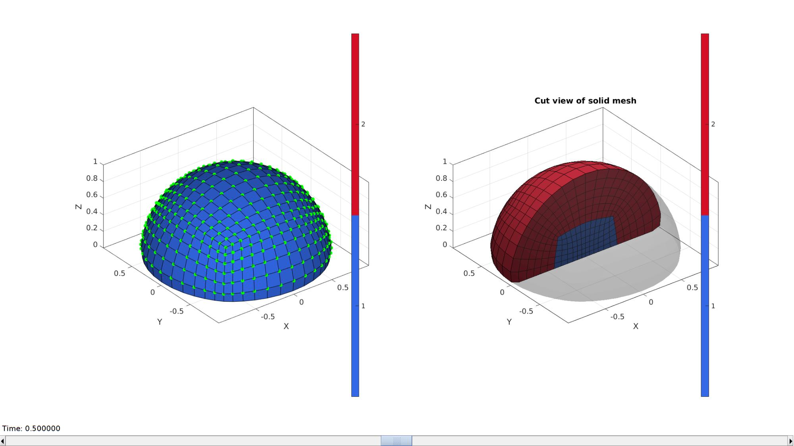

DEMO_febio_0031_blob_shear_contact
Below is a demonstration for:
- Building geometry for a hemi-spherical blob with tetrahedral elements which is being sheared by a rigid wall. This demo consists off:
- Defining the boundary conditions
- Coding the febio structure
- Running the model
- Importing and visualizing the displacement results
Contents
Keywords
- Abaqus
- indentation
- contact, sliding, sticky, friction
- rigid body constraints
- hexahedral elements
- hemisphere
- static, solid
- hyperelastic, Ogden
- displacement logfile
- stress logfile
clear; close all; clc;
Plot settings
fontSize=15; faceAlpha1=0.8; faceAlpha2=0.3; markerSize=40; lineWidth=3;
Control parameters
% Path names defaultFolder = fileparts(fileparts(mfilename('fullpath'))); savePath=fullfile(defaultFolder,'data','temp'); % Defining file names abaqusInpFileNamePart='tempModel'; abaqusInpFileName=fullfile(savePath,[abaqusInpFileNamePart,'.inp']); %INP file name % Hemi-sphere parameters hemiSphereRadius=1; numElementsMantel=6; closeOption=1; smoothEdge=1; % Ground plate parameters plateRadius=2*hemiSphereRadius; % Probe parameters probeWidth=3*hemiSphereRadius; filletProbe=0.5; %Fillet radius % Define probe displacement probeDisplacement=hemiSphereRadius*2; proveOverlapFactor=0.4; % Material parameter set c1=1e-3; %Shear-modulus-like parameter m1=8; %Material parameter setting degree of non-linearity k_factor=1e2; %Bulk modulus factor k=c1*k_factor; %Bulk modulus % FEA control settings numTimeSteps=15; max_refs=25; %Max reforms max_ups=0; %Set to zero to use full-Newton iterations opt_iter=10; %Optimum number of iterations max_retries=25; %Maximum number of retires symmetric_stiffness=0; min_residual=1e-20; step_size=1/numTimeSteps; dtmin=(1/numTimeSteps)/100; %Minimum time step size dtmax=1/(numTimeSteps); %Maximum time step size %Contact parameters contactPenalty=20; laugon=0; minaug=1; maxaug=10; fric_coeff=0.1;
Creating model geometry and mesh
%Control settings optionStruct.sphereRadius=1; optionStruct.coreRadius=optionStruct.sphereRadius/2; optionStruct.numElementsMantel=6; optionStruct.numElementsCore=optionStruct.numElementsMantel*2; optionStruct.outputStructType=2; optionStruct.makeHollow=0; optionStruct.cParSmooth.n=25; % %Creating sphere [meshStruct]=hexMeshHemiSphere(optionStruct); % Access model element and patch data Fb=meshStruct.facesBoundary; Cb=meshStruct.boundaryMarker; V=meshStruct.nodes; E=meshStruct.elements; F=element2patch(E);
pointSpacingBlob=mean(patchEdgeLengths(Fb,V)); %Smoothen edges if smoothEdge==1 %Get rigid region ind=1:1:size(V,1); %Indices for all nodes indRigid1=find(ismember(ind,Fb(Cb==2,:)) & ~ismember(ind,Fb(Cb==1,:))); %Indices for new bottom surface nodes indRigid2=find(ismember(ind,Fb(Cb==1,:)) & ~ismember(ind,Fb(Cb==2,:))); %Indices for new bottom surface nodes indRigid=[indRigid1(:); indRigid2(:);]; %Smoothing cPar.Method='HC'; cPar.n=250; cPar.RigidConstraints=indRigid; [Vb_blob]=patchSmooth(F,V,[],cPar); indSmooth=unique(F(:)); V(indSmooth,:)=Vb_blob(indSmooth,:); %Fix color data with new bottom surface Cb=ones(size(Cb)); Cb(all(ismember(Fb,indRigid1),2))=2; meshStruct.nodes=V; end
Visualize blob mesh
hFig=cFigure; subplot(1,2,1); hold on; gpatch(Fb,V,Cb,'k',1); % patchNormPlot(Fb_blob,V_blob); plotV(V(indRigid,:),'g.','MarkerSize',25); axisGeom(gca,fontSize); colormap(gjet); icolorbar; camlight headlight; hs=subplot(1,2,2); hold on; title('Cut view of solid mesh','FontSize',fontSize); optionStruct.hFig=[hFig hs]; gpatch(Fb,V,'kw','none',0.25); meshView(meshStruct,optionStruct); axisGeom(gca,fontSize); drawnow;
Creating rigid body ground plate
%Get outer surve of ground surface [Eb]=patchBoundary(Fb(Cb==2,:)); indCurveBottom=edgeListToCurve(Eb); indCurveBottom=indCurveBottom(1:end-1); % Derive point spacing for plate pointSpacingPlate=pointSpacingBlob; % Compose outer curve of the plate nPlateCurve=ceil((2*pi*plateRadius)/pointSpacingPlate); t=linspace(0,2*pi,nPlateCurve); t=t(1:end-1); x=plateRadius.*sin(t); y=plateRadius.*cos(t); V_plate_curve=[x(:) y(:) zeros(size(x(:)))]; center_of_mass_plate=mean(V_plate_curve,1);
Creating rigid body shear surface
pointSpacingProbe=pointSpacingBlob/2; %Sketching side profile x=[-hemiSphereRadius hemiSphereRadius hemiSphereRadius]-hemiSphereRadius*2; y=[0 0 0]; z=[hemiSphereRadius*(1-proveOverlapFactor) hemiSphereRadius*(1-proveOverlapFactor) hemiSphereRadius*1.5]; V_probe_curve_sketch=[x(:) y(:) z(:)]; %Fillet sketch np=100; %Number of points used to construct each fillet edge [V_probe_curve]=filletCurve(V_probe_curve_sketch,filletProbe,np,0); % numPointsProbeCurve=ceil(max(pathLength(V_probe_curve))/pointSpacingProbe); % [V_probe_curve] = evenlySampleCurve(V_probe_curve,numPointsProbeCurve,'pchip',0); center_of_mass_probe=mean(V_probe_curve,1); V_probe_curve_1=V_probe_curve(1,:); V_probe_curve_2=V_probe_curve(2,:); V_probe_curve_3=V_probe_curve(2+np-1,:); V_probe_curve_4=V_probe_curve(2,:); V_probe_curve_4(:,3)=V_probe_curve_4(:,3)+filletProbe; V_probe_curve_5=V_probe_curve(end,:);
Visualizing curves
cFigure; hold on; title('Sketched components','fontSize',fontSize); gpatch(Fb,V,'kw','none',0.5); hl(1)=plotV(V_plate_curve,'k.-','lineWidth',2,'MarkerSize',15); hl(2)=plotV(V_probe_curve,'k-','lineWidth',2); hl(3)=plotV(V_probe_curve_1,'r.','MarkerSize',50); hl(4)=plotV(V_probe_curve_2,'g.','MarkerSize',50); hl(5)=plotV(V_probe_curve_3,'b.','MarkerSize',50); hl(6)=plotV(V_probe_curve_4,'y.','MarkerSize',50); hl(7)=plotV(V_probe_curve_5,'c.','MarkerSize',50); legend(hl,{'Plate curve','Rounded probe curve','1','2','3','4','5'}); clear hl; axisGeom(gca,fontSize); camlight headlight; view(0,0); drawnow;

Defining the abaqus input structure
See also abaqusStructTemplate and abaqusStruct2inp and the abaqus user manual.
%%--> Heading abaqus_spec.Heading.COMMENT{1}='Job name: ABAQUS inp file creation demo'; abaqus_spec.Heading.COMMENT{2}='Generated by: GIBBON'; %%--> Preprint abaqus_spec.Preprint.ATTR.echo='NO'; abaqus_spec.Preprint.ATTR.model='NO'; abaqus_spec.Preprint.ATTR.history='NO'; abaqus_spec.Preprint.ATTR.contact='NO'; %--> Part % Node nodeIds=(1:1:size(V,1))'; abaqus_spec.Part{1}.COMMENT='This section defines the part geometry in terms of nodes and elements'; abaqus_spec.Part{1}.ATTR.name='Blob'; abaqus_spec.Part{1}.Node={nodeIds,V}; % Element elementIds=(1:1:size(E,1))'; abaqus_spec.Part{1}.Element{1}.ATTR.type='C3D8';%'C3D8R'; abaqus_spec.Part{1}.Element{1}.VAL={elementIds,E}; % Element sets abaqus_spec.Part{1}.Elset{1}.ATTR.elset='Set-1'; abaqus_spec.Part{1}.Elset{1}.VAL=elementIds'; % Sections abaqus_spec.Part{1}.Solid_section.ATTR.elset='Set-1'; abaqus_spec.Part{1}.Solid_section.ATTR.material='Elastic'; %Surfaces abaqus_spec.Part{2}.COMMENT='This section defines the part geometry in terms of nodes and elements'; abaqus_spec.Part{2}.ATTR.name='rigid_surface'; abaqus_spec.Part{2}.Node={1,V_probe_curve_1}; abaqus_spec.Part{2}.surface.ATTR.type='cylinder'; abaqus_spec.Part{2}.surface.ATTR.name='probe_surface'; abaqus_spec.Part{2}.surface.VAL{1,1}={[0 0 0],[1 0 0]}; abaqus_spec.Part{2}.surface.VAL{2,1}={[0 1 0]}; abaqus_spec.Part{2}.surface.VAL{3,1}={{'start';'line';},[V_probe_curve_1(:,[1 3]);V_probe_curve_2(:,[1 3]);]}; abaqus_spec.Part{2}.surface.VAL{4,1}={{'circl'},[V_probe_curve_3(:,[1 3]) V_probe_curve_4(:,[1 3])]}; abaqus_spec.Part{2}.surface.VAL{5,1}={{'line'},V_probe_curve_5(:,[1 3])}; % Rigid body %RIGID BODY, ANALYTICAL SURFACE=name, REF NODE=n abaqus_spec.Part{2}.rigid_body.ATTR.analytical_surface='probe_surface'; abaqus_spec.Part{2}.rigid_body.ATTR.ref_node=1; %%--> Assembly abaqus_spec.Assembly{1}.ATTR.name='Assembly-1'; abaqus_spec.Assembly{1}.Instance{1}.ATTR.name='Blob-assembly'; abaqus_spec.Assembly{1}.Instance{1}.ATTR.part='Blob'; abaqus_spec.Assembly{1}.Instance{2}.ATTR.name='rigid_surface-assembly'; abaqus_spec.Assembly{1}.Instance{2}.ATTR.part='rigid_surface'; abaqus_spec.Assembly{1}.Instance{2}.VAL{1,1}={[0 0 0]}; abaqus_spec.Assembly{1}.Instance{2}.VAL{2,1}={[0 0 0 1 0 0 90]}; % abaqus_spec.Assembly{1}.Nset{1}.ATTR.nset='All'; % abaqus_spec.Assembly{1}.Nset{1}.ATTR.instance=abaqus_spec.Assembly{1}.Instance{1}.ATTR.name; % abaqus_spec.Assembly{1}.Nset{1}.VAL=[1:1:size(V,1)]; % % Rigid body % %RIGID BODY, ANALYTICAL SURFACE=name, REF NODE=n % abaqus_spec.Assembly{1}.rigid_body.ATTR.analytical_surface='probe_surface'; % abaqus_spec.Assembly{1}.rigid_body.ATTR.ref_node=1; %%--> Material abaqus_spec.Material{1}.ATTR.name='Elastic'; abaqus_spec.Material{1}.Elastic=[1 0.45]; %%--> Step abaqus_spec.Step.ATTR.name='Step-1'; abaqus_spec.Step.ATTR.nlgeom='YES'; abaqus_spec.Step.Static=[0.1 1 1e-5 0.1]; % Boundary % abaqus_spec.Step.Boundary{1}.VAL={'Set-1',[1,1]}; % abaqus_spec.Step.Boundary{2}.VAL={'Set-2',[2,2]}; % abaqus_spec.Step.Boundary{3}.VAL={'Set-3',[3,3]}; % abaqus_spec.Step.Boundary{4}.VAL={'Set-4',[3,3],-0.1}; %Output abaqus_spec.Step.Restart.ATTR.write=''; abaqus_spec.Step.Restart.ATTR.frequency=0; abaqus_spec.Step.Output{1}.ATTR.field=''; abaqus_spec.Step.Output{1}.ATTR.variable='PRESELECT'; abaqus_spec.Step.Output{2}.ATTR.history=''; abaqus_spec.Step.Output{2}.ATTR.variable='PRESELECT'; % abaqus_spec.Step.Node_print.ATTR.nset='all'; % abaqus_spec.Step.Node_print.ATTR.frequency = 1; % abaqus_spec.Step.Node_print.VAL='COORD'; % abaqus_spec.Step.El_print.VAL='S';
abaqusStruct2inp(abaqus_spec,abaqusInpFileName);
textView(abaqusInpFileName);

GIBBON www.gibboncode.org
Kevin Mattheus Moerman, gibbon.toolbox@gmail.com
GIBBON footer text
License: https://github.com/gibbonCode/GIBBON/blob/master/LICENSE
GIBBON: The Geometry and Image-based Bioengineering add-On. A toolbox for image segmentation, image-based modeling, meshing, and finite element analysis.
Copyright (C) 2006-2022 Kevin Mattheus Moerman and the GIBBON contributors
This program is free software: you can redistribute it and/or modify it under the terms of the GNU General Public License as published by the Free Software Foundation, either version 3 of the License, or (at your option) any later version.
This program is distributed in the hope that it will be useful, but WITHOUT ANY WARRANTY; without even the implied warranty of MERCHANTABILITY or FITNESS FOR A PARTICULAR PURPOSE. See the GNU General Public License for more details.
You should have received a copy of the GNU General Public License along with this program. If not, see http://www.gnu.org/licenses/.